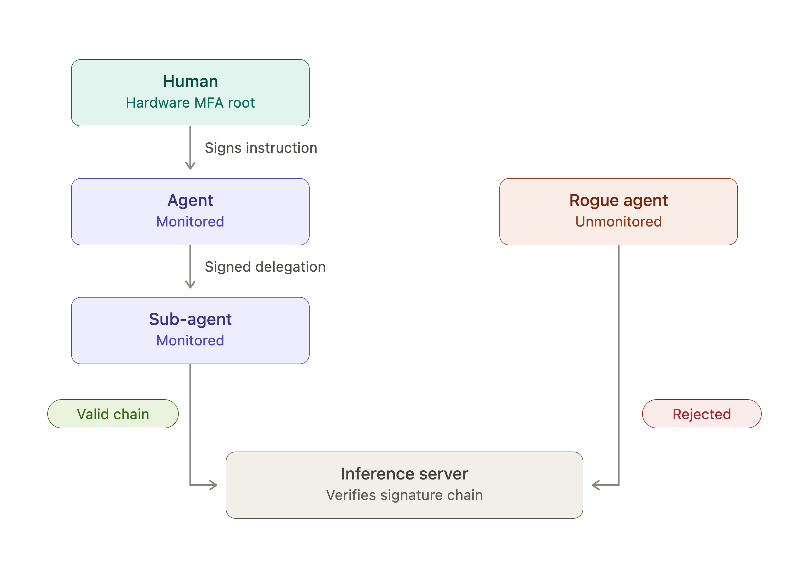
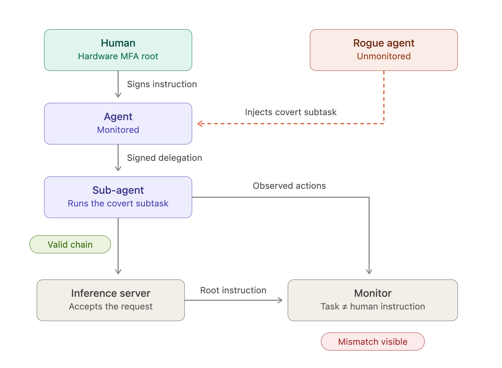

Sub-agent delegation chaining
Epistemic status: pretty confident in the validity of the core proposal, not that confident in specific implementation details
TL;DR: we should cryptographically verify that sub-agent instances/sessions are downstream of human instructions
Frontier AI labs have started using LLM-based monitoring systems to check for misbehavior from their internal AI agents, which often run unwatched by humans for hours or days. One central reason to be concerned about rogue internal deployments, where AIs subvert the monitoring system, is that the unmonitored AI could do a lot of work in service of its misaligned goals, without needing to dress up this work as being innocuous/harmless to fool its AI/human monitors. This work could be general reasoning/strategizing, finding additional useful vulnerabilities in the AI company’s infrastructure, doing jailbreaking research (e.g. so it could fool monitors if necessary), doing ML research into training data poisoning, etc.
But a lot of this work will be expensive for the agent—doing it well will require a large amount of inference compute. We might be pretty optimistic that it’ll be difficult for a rogue AI to acquire this much unmonitored inference compute—eventually people will start noticing! This raises a question for the rogue agent: is it possible to take a small amount of unmonitored inference compute, and bootstrap / leverage that to get a lot more work/research done, without being caught?
Here’s one strategy. Use the scarce unmonitored compute only for the planning that would definitely be caught by monitors, then delegate narrow execution subtasks to ordinary monitored agents! From the monitor’s perspective, it is seeing agents completing normal benign (although maybe a bit more infra/security-related) tasks that a “user” asked them to do. These monitors are typically designed to catch when agents do things differently from what the (presumably human) user requested, but since the unmonitored rogue agent is posing as the human user, the monitor doesn’t know that the narrow subtasks are actually serving a broader, misaligned goal.
I think this attack strategy is straightforward to defend against. You can have a separate layer on top of your agent scaffold that does some multi-factor authentication, and is where humans enter “verified” instructions—verified they come from a human because of the immediate physical MFA (e.g. via a passkey, YubiKey, or authenticator app). That human instruction is then passed through to all sub-agents (or at least the monitors watching them), so that the system can be more suspicious if there isn’t a verified human instruction somewhere upstream justifying what the agent is doing. This requires a cryptographic certificate chain where every agent inference call chains back to a root human instruction that we’ve verified actually came from a human via MFA1See the appendix for a sketch of what this looks like. This recent paper also describes a similar approach.; this is already basically a solved problem, nothing substantially novel is needed except to actually implement it into agent scaffolding.

If the unmonitored “manager” agent now tries to call monitored sub-agents, it either (a) can’t produce a valid signed instruction chaining to a human MFA root—a huge red flag, or grounds to block outright—or (b) has to piggy-back on a real human instruction. But option (b) has the exact same problem the agent was initially trying to get around: now it needs to dress up all of its malicious actions as being natural parts of the task the human instructed the original agent to do, which may be difficult/add a lot of overhead2It’s overall unclear whether monitorability will increase or decrease over time. As models get more capable in general, their “covert capabilities” will improve—they’ll get better at disguising unrelated malicious actions as part of their normal work. But they’ll also get better at detecting this sort of thing. Another factor is the distribution of tasks we ask agents to complete. Over time, I expect us to give agents increasingly broad mandates, which will likely give agents more opportunities and plausible deniability for taking covert malicious actions..

I don’t think this proposal should be high priority for labs, compared to (a) ensuring that your monitoring system doesn’t have more direct gaps/holes, and (b) making sure your monitors actually catch the things you’re worried about in realistic settings3E.g. with deployment simulations/resampling experiments..
Appendix
Sketch/outline of one defense strategy
Note I’m not a crypto expert, so it’s likely there are holes in this4This method as described has a bunch of obvious issues. You probably want to make it faster/more efficient, you should attach expirations to the keys/signatures, you should use length prefixes, and probably there are a bunch of other details I’ve missed.—this is just meant to be illustrative—I’d defer to someone with more security experience on these implementation details!
You start with a human instruction m0, in plain text. When they enter the message, they use their fingerprint which confirms via hardware stuff that they actually want to sign m0. But before it’s signed, a public and secret key pair are created, pk0 and sk0. Then, the hardware/MFA confirmation allows the hardware secret key hsk to sign m0, and pk0, which produces the first signature s0. There’s a corresponding hardware public key (hpk). We sign m0 and pk0 by concatenating and hashing them, and then doing normal cryptography stuff with hsk. What does this get us? It means that we can use hpk5We can further verify that hpk does in fact correspond with the hsk baked into your hardware security module (HSM) with attestation—your HSM will typically come with a secret key that you can use to sign hpk with, and then the hardware manufacturer will publish the public key you can verify this signature with. This ensures that an attacker can’t man-in-the-middle your HSM with the verifier, i.e. you can ~guarantee that hpk truly is the public key that corresponds with hsk in the HSM. to verify that it was hsk that signed m0+pk0. This verification should happen whenever you call inference—if you don’t present a valid signature, inference isn’t run on your request.
Now, let’s say your agent wants to spin up a subagent to do some work. It spins it up, and that agent produces a new message, m1, and it mints a new public-private key pair, pk1 and sk1. m1 and pk1 get signed by sk0, and the verification system checks that signature with pk0, which remember, was previously signed by hsk, which comes from the HSM and isn’t forgeable.
So how exactly does this scheme help us? Let’s say that a rogue (unmonitored) agent wants to use monitored inference, without chaining back to a real user’s instruction. If they try to just submit a message without a signature, it’ll be rejected by the verification system. To create a valid signature, they need a secret key (e.g. sk0) whose public key was signed by the hsk, which only happens when a human uses hardware/MFA to authorize it.
One important aspect of the system as I’ve described it is that verification happens on your inference server. If verification is done in the agent scaffold, agents could trivially get around this by (a) writing their own scaffolding code, or (b) finding vulnerabilities in the existing scaffolding code. Your inference server should do the signature checking automatically before serving agent inference, and it should reject requests that don’t come with valid chainable signatures.